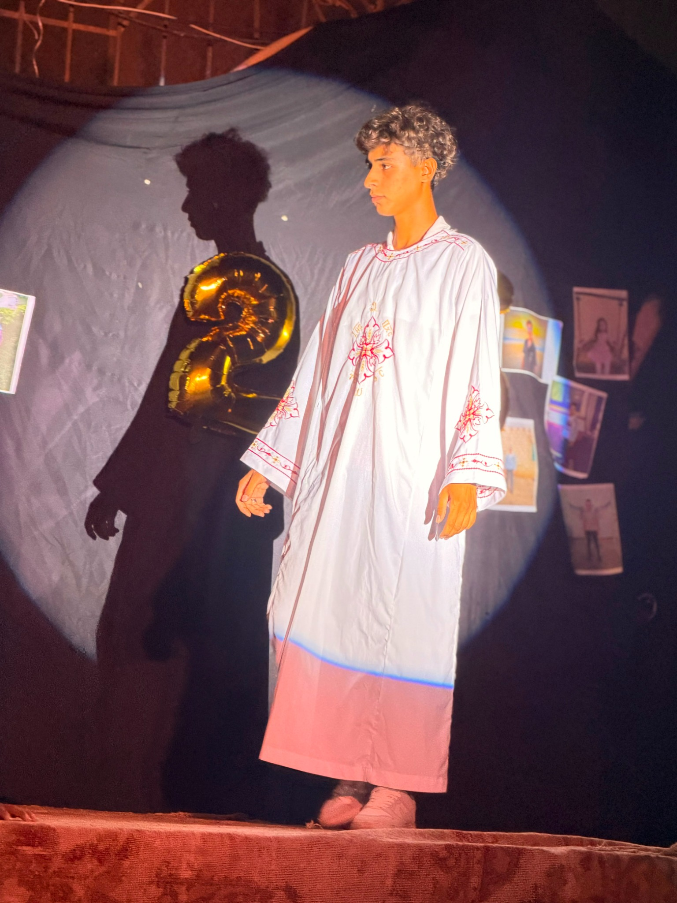
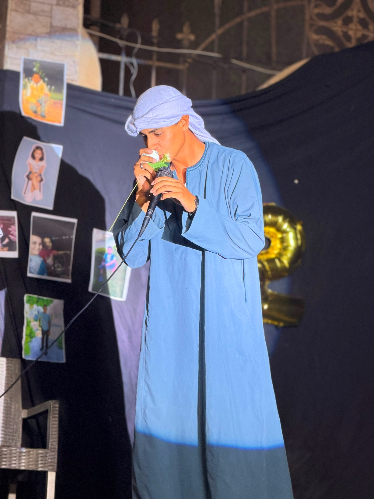
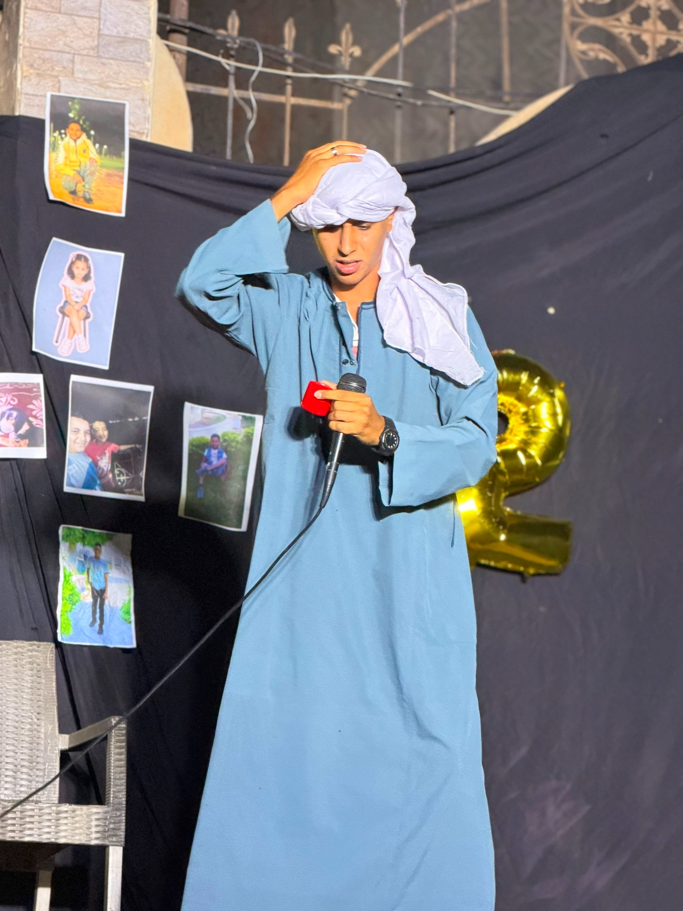
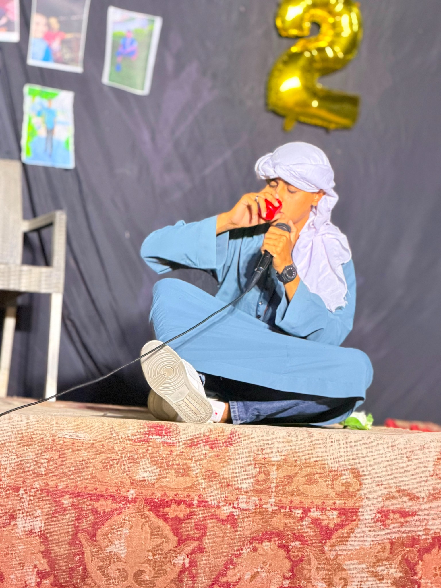

Theatre enthusiast, performer and storyteller. I believe that every stage carries a story waiting to be told.

اسمي Malak Nady، وشغفي الأساسي هو المسرح والتمثيل. بحب فكرة إن الشخصية اللي بقدمها تقدر توصل إحساس ورسالة للجمهور. بالنسبة لي، كل عرض تجربة جديدة، وكل شخصية بتعلّمني حاجة جديدة.
لحظة من رحلتي على خشبة المسرح.

تجربة مختلفة من عالم المسرح.

شخصية وتجربة تركت أثرًا خاصًا.

فصل جديد من رحلتي الفنية.
المسرح هو المساحة اللي بقدر فيها أكون أنا وأعيش أكتر من حياة. كل ستارة بتفتح بالنسبة لي بداية حكاية جديدة، وكل شخصية بقدمها بتسيب جوايا جزء منها.